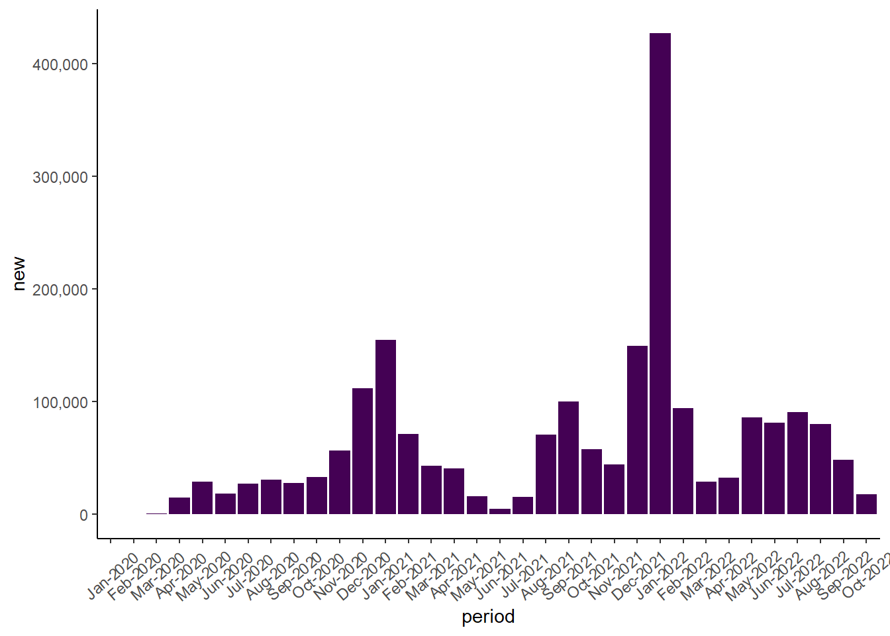
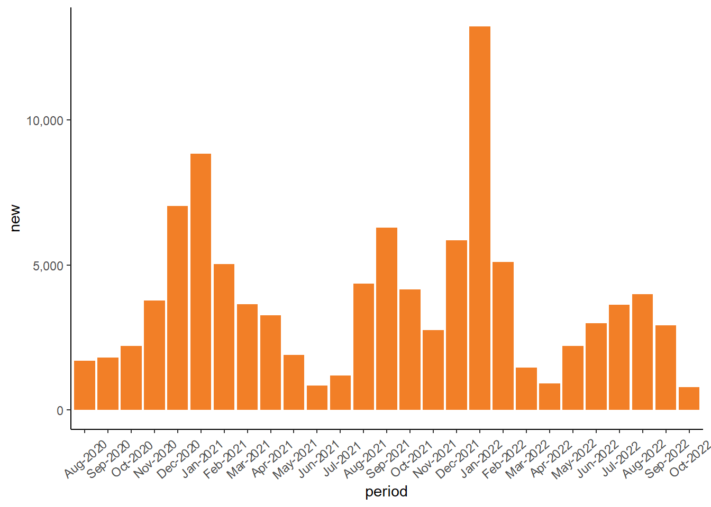
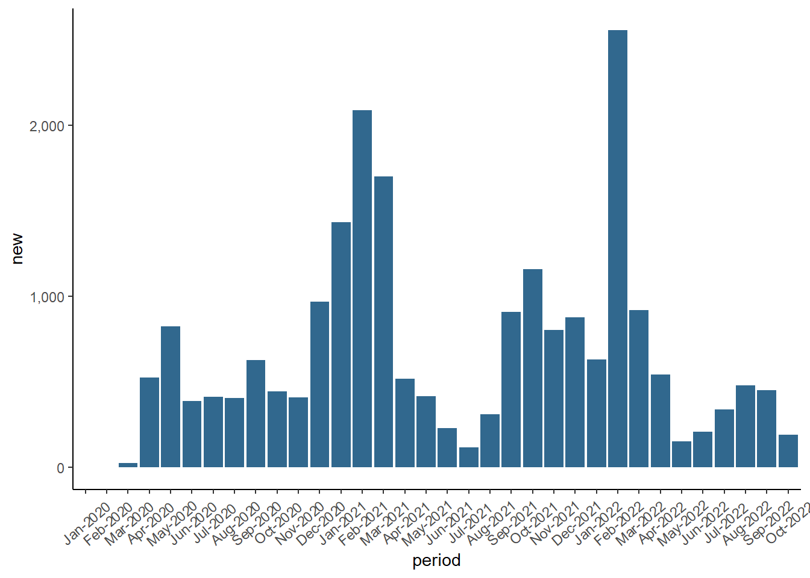
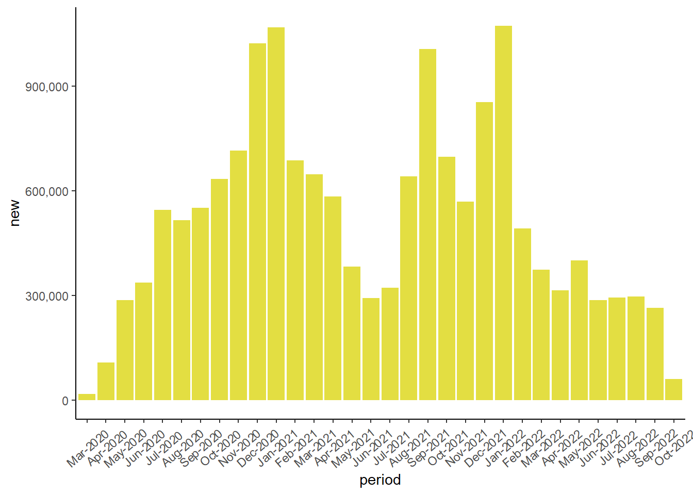

Monthly COVID Report, VA
Virginia Monthly COVID Report
indicator | cum | new | avg | change | 7cum |
Cases | 2106527 | 942 | 1057 | 7.6% | 86.7 |
Hospital Admissions | NA | 57 | 81 | 6.6% | 6.6 |
Deaths | 22057 | 16 | 10 | -16.7% | 0.8 |
Test Volume | 16,354,011 | N/A | 8,311 | -4.3% | 590.4 |
Test Positivity | 13.5% | N/A | 9.9% | -14.2% | N/A |
Monthly Change in COVID-19 Cases, Virginia

Monthly Change in COVID-19 Hospital Admissions, Virginia

Monthly Change in COVID-19 Deaths, Virginia

Monthly Change in COVID-19 Testing, Virginia
